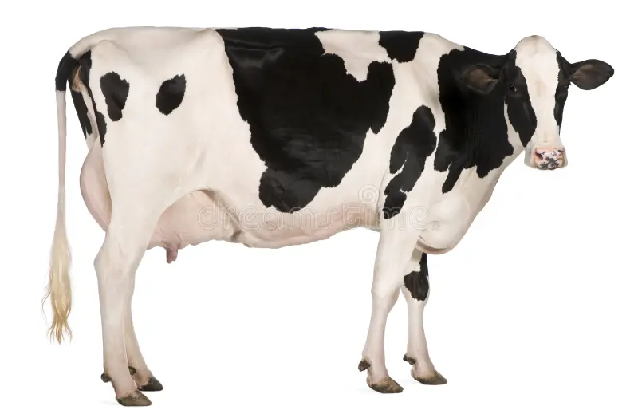

A vaca leiteira é um dos animais mais importantes para cooperativas agrícolas. Ela é criada principalmente para a produção de leite, que pode ser usado in natura ou transformando em queijo, manteiga e iorgute.
Uma vaca leiteira adulta pode produzir vários litros de leite por dia. Ela precisa de boa alimentação, água limpa e cuidados veterinários regulares para manter a saúde e produção.
Ficha produzida para a aula de programação web.